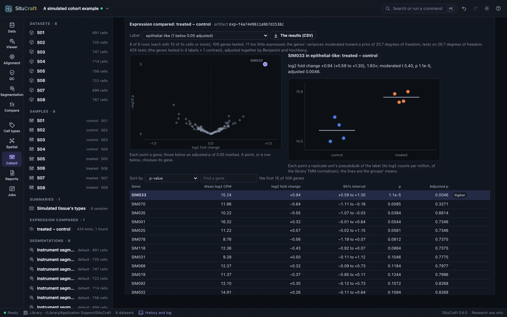
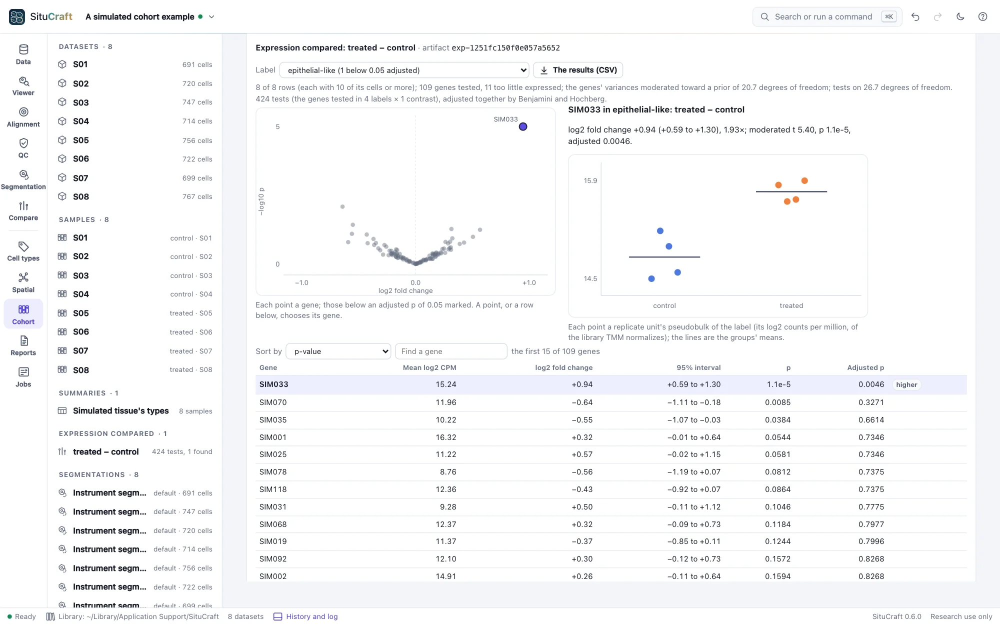

Differential expression
Does a cell type express a gene more in one group than another? SituCraft answers with each sample (or subject) as one observation, never each cell: the cell type's transcripts summed in each, compared by a model of the design.
Pseudobulk: the unit
Thousands of cells of a type in a section are not thousands of replicates: they share the subject, the slide and the run. Tested cell by cell, tiny differences look certain. SituCraft sums each label's cells' transcripts of each gene in each of the design's rows (a replicate unit, such as a subject, with its samples combined): the label's pseudobulk, from the cohort table (see Sample summaries). It then compares the rows, as bulk RNA-seq compares samples (Crowell et al. 2020).
- The genes every panel has. A gene some samples' panels lack is left out (see Cohort QC).
- Rows with enough of a label's cells. A row with fewer than 10 of a label's cells (the number can be changed) is left out of that label's comparison: its pseudobulk is too small to measure the label. A label in too few rows for the design, or whose remaining rows leave the design without a group, is untested, and the reason is said.
The model
Compare expression in the Cohort view's Differential expression fits each label in turn:
- Genes expressed enough to test. A gene is kept when its count per million is at least 10 over the median library size in as many rows as the smallest group has, and its total count is at least 15 (Chen, Lun and Smyth 2016).
- Normalization. Library sizes are adjusted by trimmed means of M-values (TMM; Robinson and Oshlack 2010), so that a few genes much higher in some rows do not make the rest look lower.
- Precision weights. Each value is a log2 count per million. Voom fits a trend of the genes' variation against their mean expression and weighs each value by the precision the trend gives it (Law et al. 2014).
- Each gene's model of the design, with its pairing and covariates, by weighted least squares. Its variance is moderated toward the genes' common one, by as much as the genes' variances agree, and each contrast is tested by the moderated t (Smyth 2004).
Each contrast's effect is a log2 fold change with its interval (95% by default). P-values are adjusted by Benjamini and Hochberg over every label, gene and contrast tested; the universe is stated with the results.
Reading the results
Choose a label (and a contrast, when there are several). A sentence says what was compared: the rows used, the genes tested and those too little expressed, how far the variances were moderated, and the tests' degrees of freedom. The volcano plots each gene's log2 fold change against its p-value, those below an adjusted p of 0.05 marked. The table lists the genes by p-value (or by the size of their change), and Find a gene narrows it. Choosing a gene, in the table or on the volcano, plots each row's log2 counts per million by group, read from the cohort table's pseudobulk. The results (CSV) writes every test.


With four subjects a group, an interval of a log2 fold change is often a whole unit wide. That is the samples' variation, which a test of cells would hide.
Pairing narrows it. When each subject is sampled in both groups, a paired design compares each subject with itself, and the subjects' own levels leave the comparison. In the cohort before and after (six subjects), SIM033 in the epithelial-like cells is +1.08 log2 either way, but its interval is 0.84 to 1.31 paired and 0.75 to 1.41 with the twelve sections as separate units: 0.47 log2 wide instead of 0.66.
Neighbors' transcripts
A label's pseudobulk sums the transcripts within its cells' outlines, and an outline also holds some of its neighbors' transcripts. When the groups differ in which cells lie next to a label's, its pseudobulk differs with them: a gene of the neighbors can be found higher in a label that does not express it. In the cohort before and after, where endothelial-like cells are more common after, their markers SIM025 to SIM030 are found higher after in the epithelial-like and immune-like cells, whose true expression of them did not change. Read a gene found in a label beside the comparison of abundance: when a neighboring type's share changes, its markers may follow it into its neighbors' pseudobulk.
By remote control
compare_expression compares the labels (by the design draft or a saved design) and answers each label's genes found, its lowest p-values, its rows and prior. show_gene shows a gene's values in a label by group, with its tests. See Remote control.
How it is checked
- Against limma and edgeR: on nine tables (the simulated cohort's four labels by condition, and one by condition and slide; four subjects before and after; three groups, each against the first and the third against the second; libraries that differ tenfold with a few genes making up much of some; 40 genes), the genes kept are edgeR 4.10.5's, and the TMM factors, voom's span and weights, each gene's residual deviation, the prior, and every log fold change, interval, moderated t and p equal limma 3.68.5's within 10⁻⁹ (
validation/reference/limma/). The smoothing behind voom's trend equals R's lowess within 10⁻¹⁰. - On null tables: of 40 tables of 200 negative binomial genes without a difference (four rows against four), the tests reject about as often as their level says (5.1% at 5%, 1.2% at 1%).
- In the page: on the simulated cohort, SIM033 is found higher in the epithelial-like cells, and its interval covers the fold the true cells show (0.97 log2); at most one other gene is found. The null cohort finds nothing: of its 423 tests, the lowest adjusted p is 0.25. On the cohort before and after, the paired design's interval of SIM033 is narrower than the sections' as separate units, and the endothelial-like markers are found in their neighbors. Each is a worked example (see Worked examples), walked to its end by the viewer suite.
- On simulated cohorts: of 2,000 null cohorts, 5.1% of the genes' tests below 0.05; of 500 with a gene raised 2.5-fold, the gene found in 98% and its interval covering the truth in 95.0%, weekly; see Error rates and scale.